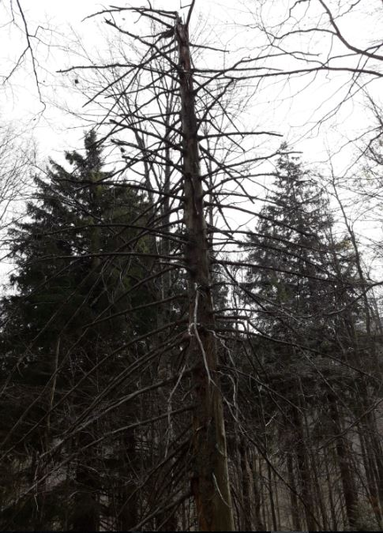

Albero morto
Il legno è una delle materie più difficili da decomporre. Gli alberi morti sono molto importanti perché costituiscono elementi fondamentali degli ecosistemi forestali, fornendo substrato, nutrimento e rifugio per innumerevoli specie. I detriti legnosi grossolani, nelle varie fasi di decomposizione, rappresentano importanti habitat per una varietà di organismi, compresi funghi, muschi, licheni, invertebrati, anfibi, uccelli nidificanti in cavità e piccoli mammiferi come pipistrelli e ghiri. I funghi sono organismi eterotrofi, cioè basano il loro nutrimento sull'assorbimento di sostanze organiche complesse presenti nell'ambiente in cui vivono. Da questo punto di vista si comportano da parassiti, saprotrofi, cioè che si nutrono di materia organica in decomposizione o , in altri casi, simbionti. I funghi saprotrofi crescono su substrati organici morti, quali appunto gli alberi morti, i tronchi a terra, le ceppaie, ecc., e permettono con la loro azione demolitrice di far ritornare al suolo i nutrienti. Funghi e batteri sono i principali responsabili della decomposizione della sostanza organica, vale a dire quell'insieme di sostanze complesse formate da atomi di carbonio e idrogeno. Durante la decomposizione i nutrienti della sostanza organica vengono mineralizzati e resi nuovamente disponibili per altri organismi.